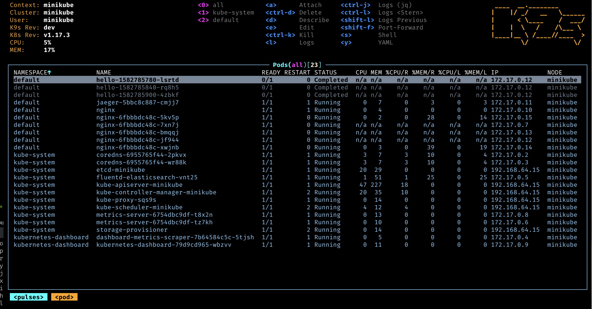
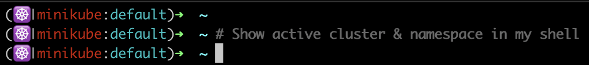

필수 쿠버네티스 관리 툴
개요
멀티 클러스터 기반의 쿠버네티스를 관리할 때 생산성Productivity을 높여주는 플러그인들을 설치하고 사용하는 방법을 안내하는 가이드입니다.
환경
- OS : macOS Monterey 12.3 (M1 Pro)
- Shell : zsh + oh-my-zsh
- Terminal : iTerm 2
- mac용 패키지 관리자 : Homebrew 3.4.3
준비사항
- macOS 패키지 관리자인
brew설치가 필요합니다. - 쿠버네티스 CLI 툴인
kubectl설치가 필요합니다.
brew와 kubectl 설치방법은 이 글의 주제를 벗어나기 때문에 생략합니다.
요약
krew 패키지
총 9개 K8s CLI 플러그인의 설치 및 사용법을 안내합니다.
- k9s
- kubecolor
- krew
- stern
- tree
- kubectx (ctx) & kubens (ns)
- kubectl node-shell
- kubectl autocompletion
- kube-ps1
krew 백업 및 복구
플러그인 가이드의 내용이 끝난 이후에는 krew 명령어를 사용한 패키지 백업, 복구 방법을 안내합니다.
쿠버네티스 플러그인 사용 가이드
이 가이드에서 다룰 쿠버네티스 플러그인은 9개입니다.
| No. | 플러그인 이름 | 권장하는 설치방식 |
|---|---|---|
| 1 | k9s | 🍺 brew |
| 2 | kubecolor | 🍺 brew |
| 3 | krew | 🍺 brew |
| 4 | stern | 🍺 brew |
| 5 | kubectl tree | 🐋 krew |
| 6 | kubectx (ctx) & kubens (ns) | 🍺 brew or 🐋 krew |
| 7 | kubectl node-shell | 🐋 krew |
| 8 | kubectl autocompletion | 🐋 krew |
| 9 | kube-ps1 | 🍺 brew |
1. k9s
설명
k9s는 쿠버네티스 클러스터 관리 툴입니다.
알록달록한 컬러 표시, 표시된 정보가 실시간으로 바뀌는 Interactive 기능, TUITerminal User Interface 기반이라 kubectl 명령어 입력 없이 방향키와 단축키만으로 클러스터와 관련된 모든 작업이 가능합니다.
설치방법
macOS용 패키지 관리자인 homebrew로 설치합니다.
$ brew install k9s
사용법 예시
쿠버네티스 클러스터에 접근 가능한 환경에서 아래 명령어를 실행하면 k9s 관리 창이 뜬다.
$ k9s

위 스크린샷은 k9s에서 전체 파드를 보고 있는 화면입니다.
자세한 k9s 조작법은 k9s 깃허브 레포지터리를 참고합니다.
k9s 설정 가이드
k9s 스킨 설정
k9s 스킨을 적용하려면 k9s info 명령어를 사용 후 설정파일 경로인 Configuration을 확인합니다.
$ k9s info
____ __.________
| |/ _/ __ \______
| < \____ / ___/
| | \ / /\___ \
|____|__ \ /____//____ >
\/ \/
Configuration: /Users/younsl/Library/Application Support/k9s/config.yml
Logs: /var/folders/_x/sngy0t4546q0d3h5mvybr9dc0000gn/T/k9s-younsl.log
Screen Dumps: /var/folders/_x/sngy0t4546q0d3h5mvybr9dc0000gn/T/k9s-screens-younsl
k9s는 기본적으로 Configuration 경로에 위치한 skin.yml 파일을 기본 스킨으로 참조합니다.
k9s 공식 스킨들 중에서 원하는 스킨을 복사해서 skin.yml 파일을 작성합니다.
$ touch skin.yml
$ tree "/Users/younsl/Library/Application Support/k9s/"
/Users/younsl/Library/Application Support/k9s/
├── config.yml
└── skin.yml
skin.yml 파일을 세팅한 후 k9s 명령어를 다시 실행하면 스킨이 적용된 걸 확인할 수 있습니다.
자세한 사항은 k9s 공식문서의 Skins 페이지 혹은 제가 사용중인 k9s 설정파일을 참고합니다.
k9s 설정파일 경로 변경
k9s는 XDG_CONFIG_HOME 환경 변수를 설정하여 해당 경로로 설정 파일을 이동할 수 있습니다.
XDG X Desktop Group
Linux와 Unix 시스템에서 사용자 관련 설정 파일과 데이터를 표준화된 디렉토리 구조에 저장하는 규약입니다.
XDG_CONFIG_HOME 환경변수가 없는 경우, k9s의 설정파일 경로 기본값은 (macOS 기준) /Users/<YOUR_USERNAME>/Library/Application Support/k9s/이 됩니다.
k9s 설정파일 경로를 변경하려면 zsh 설정파일 ~/.zshrc 에서 XDG_CONFIG_HOME 환경변수를 새로 선언합니다.
...
# k9s
export XDG_CONFIG_HOME="$HOME/.config"
위 설정의 경우, k9s는 XDG를 활용하여 설정파일을 $XDG_CONFIG_HOME/k9s 아래에 유지합니다.
k9s info 명령어로 변경된 k9s 설정파일 경로를 확인합니다.
$ k9s info
____ __.________
| |/ _/ __ \______
| < \____ / ___/
| | \ / /\___ \
|____|__ \ /____//____ >
\/ \/
Configuration: /Users/younsl/.config/k9s/config.yml
...
설정파일 경로가 /Users/younsl/Library/Application Support/k9s/config.yml에서 /Users/younsl/.config/k9s/config.yml로 변경된 걸 확인할 수 있습니다.
자세한 사항은 k9s 공식문서의 Configuration 페이지 혹은 제가 사용중인 k9s 설정파일을 참고합니다.
2. kubecolor
설명
kubectl 결과값의 가독성을 향상시켜주는 플러그인입니다.
kubectl 명령어 결과의 각 컬럼에 색깔을 표시해서 쉽게 구분할 수 있습니다.
2022년 3월 기준으로, 최초 개발자가 kubecolor 플러그인을 업데이트하지 않고 있어서 사용에 주의가 필요합니다.
설치방법
homebrew로 설치합니다.
$ brew install kubecolor
사용법 예시
kubectl 대신 kubecolor 명령어를 사용합니다.
$ kubecolor get pod
kubectl 명령어에 컬러 표시를 항상 적용하고 싶다면, 쉘 설정파일 안에 alias 설정을 추가하면 더 편하게 사용 가능하다. 아래는 zsh 기준의 설정방법.
$ vi ~/.zshrc
...
# kubecolor
alias kubectl=kubecolor
...
3. krew
설명
krew는 kubectl 플러그인 패키지 매니저입니다.
krew를 통해 설치할 수 있는 패키지 전체 목록은 krew 공식 사이트에서 확인하실 수 있습니다.
쿠버네티스 전용 homebrew라고 이해하면 됩니다.
설치방법
homebrew로 설치할 수 있습니다.
$ brew install krew
사용법 예시
krew로 설치한 플러그인 목록을 출력하는 명령어입니다.
$ kubectl krew list
PLUGIN VERSION
ctx v0.9.4
krew v0.4.3
ns v0.9.4
tree v0.4.1
krew로 설치한 플러그인 전체의 최신 버전을 확인하는 명령어입니다.
$ kubectl krew update
설치된 krew 플러그인들을 최신 버전으로 업그레이드합니다.
$ kubectl krew upgrade
4. stern
설명
여러 대의 파드 & 컨테이너의 로그를 동시에 모니터링할 때 사용합니다.
stern과 비슷한 기능을 하는 플러그인으로는 kail이 있습니다.
설치방법
homebrew로 stern을 설치합니다.
$ brew install stern
사용법
$ stern -n prometheus sample-prom-pod
-n: 네임스페이스 지정sample-prom-pod: (예시) 파드 이름에sample-prom-pod가 포함된 파드들의 로그만 실시간 모니터링tail.
5. kubectl tree
설명
kubectl tree 플러그인은 Kubernetes 클러스터 내의 리소스 계층 구조를 트리 형태로 시각화하는 도구입니다. 이 플러그인을 사용하면 클러스터 내에 있는 네임스페이스, 리소스 종류, 리소스 인스턴스 등을 트리 구조로 표현하여 더 직관적으로 파악할 수 있습니다.
설치방법
krew를 사용해서 tree를 설치합니다.
$ kubectl krew install tree
사용법 예시
$ kubectl tree deploy sample-redis
NAMESPACE NAME READY REASON AGE
sample Deployment/sample-redis - 138d
sample ├─ReplicaSet/sample-redis-000df0b0 - 138d
sample ├─ReplicaSet/sample-redis-x00x0c000 - 125d
sample └─ReplicaSet/sample-redis-xx0b00xxc - 67d
sample └─Pod/sample-redis-xx5x00xxc-zqbrk True 2d12h
특정 Deployment에 속한 ReplicaSet과 Pod 정보를 트리 형태로 표현해줍니다.
kubectl tree의 자세한 사용법을 확인합니다.
$ kubectl tree --help
6. kubectx & kubens
쿠버네티스의 컨텍스트를 여러개 사용하고 있거나, 네임스페이스를 여러개 사용하고 있을 때 필요한 플러그인 조합입니다.
몇 글자 안되는 짧은 명령어로 클러스터 간의 이동, 네임스페이스 간의 이동이 가능하므로 멀티 클러스터를 관리하는 엔지니어라면 필수 사용하는 것을 추천합니다.
kubectx와 kubens는 krew와 brew를 사용한 설치 방식 모두를 지원하고 있습니다.
설명
kubectx (ctx)
kubectx는 컨텍스트(클러스터)를 쉽게 변경할 수 있는 명령어입니다.
컨텍스트 전환시에 kubectl config use-context dev-cluster와 같은 복잡한 명령어를 kubectl ctx dev-cluster와 같이 더 간단하게 사용할 수 있습니다.
kubens (ns)
kubens 명령어는 기본 네임스페이스를 변경할 수 있도록 도와줍니다. 이 두 플러그인 모두 tab 완성기능을 지원합니다.
여기에 추가로 fzffuzzy finder를 설치하면 대화식 메뉴도 제공하기 때문에 더 편하게 사용할 수 있습니다.
설치방법 (krew)
ctx와 ns 모두 krew로 설치할 수 있습니다.
$ kubectl krew install ctx
$ kubectl krew install ns
krew로 설치한 모든 패키지를 확인합니다.
$ kubectl krew list
PLUGIN VERSION
ctx v0.9.4
ns v0.9.4
krew로 설치한 플러그인 목록에 ctx와 ns가 새로 추가된 걸 확인할 수 있습니다.
사용법 (krew)
설치 후 kubectl ctx와 kubectl ns 명령어로 사용할 수 있습니다.
fzf 플러그인이 같이 설치되어 있는 상태에서 명령어를 실행하면, 아래처럼 방향키를 통해 이동해서 선택 가능한 대화식 메뉴로 동작합니다.
$ kubectl ctx
> docker-desktop
dev-cluster
qa-cluster
prod-cluster
4/4
$ kubectl ns
default
redis
> prometheus
grafana
nginx
5/5
더 편하게 사용하기
쉘 설정파일에서 kubectl 명령어를 k로 alias 설정합니다.
zsh을 사용할 경우 다음과 같이 설정할 수 있습니다.
$ vi ~/.zshrc
...
plugins=(
...
kubectl # Add kubectl plugins
)
이후 변경된 쉘 설정을 적용합니다.
$ source ~/.zshrc
$ which k
k: aliased to kubectl
이제 더 축약된 명령어로 컨텍스트와 네임스페이스 전환을 실행할 수 있습니다.
$ k ctx # aliased to `kubectl ctx`
$ k ns # aliased to `kubectl ns`
설치방법 (brew)
이번에는 Homebrew로 설치합니다.
$ brew install kubectx
kubectx를 설치하면 kubens도 같이 설치됩니다.
$ which kubectx kubens
/opt/homebrew/bin/kubectx
/opt/homebrew/bin/kubens
사용법 (brew)
$ kubectx
$ kubens
7. kubectl node-shell
설명
node-shell은 kubernetes 노드에 쉽게 접속할 수 있도록 도와줍니다.
nsenter 기능을 사용하는 원리입니다.
설치방법
쿠버네티스 플러그인 관리자인 krew를 사용해서 설치할 수 있습니다.
아래는 node-shell 깃허브의 공식 설치방법입니다.
$ kubectl krew index add kvaps https://github.com/kvaps/krew-index
$ kubectl krew install kvaps/node-shell
사용법
kubectl node-shell 명령어를 사용합니다.
$ kubectl node-shell <NODE NAME>
NODE NAME은 kubectl get node 명령어로 확인할 수 있습니다.
$ kubectl node-shell minikube
spawning "nsenter-jcwmqn" on "minikube"
If you don't see a command prompt, try pressing enter.
root@minikube:/#
root@minikube:/#
node-shell 명령어를 사용해서 minikube라는 이름을 가진 노드에 접속했습니다.
8. kubectl 자동완성
설명
kubectl 명령어 자동완성은 플러그인은 아닙니다.
kubectl에서 기본 지원하는 기능으로 추가 설치는 필요 없습니다.
설정방법
zsh 플러그인에서 kubectl을 선언합니다.
$ vi ~/.zshrc
...
plugins=(
...
kubectl # Add kubectl plugins
)
...
kubectl 플러그인을 선언하면 다음 코드들이 자동 실행되면서 아래와 같은 기능을 사용할 수 있습니다.
kubectl자동완성 기능- 자주 사용하는 명령어 축약. 대표적으로
kubectl을k로 사용 가능
추가한 .zshrc의 설정을 현재 세션에서 즉시 적용합니다.
$ source ~/.zshrc
사용법
kubectl 또는 k 명령어를 입력한 후 tab 키를 입력합니다.
$ kubectl [tab]
$ k [tab]
tab 키를 누르면 아래와 같이 kubectl 명령어 다음에 올 수 있는 하위 명령어 리스트가 출력됩니다.
$ kubectl
alpha -- Commands for features in alpha
annotate -- 자원에 대한 주석을 업데이트합니다
api-resources -- Print the supported API resources on the server
api-versions -- Print the supported API versions on the server, in the form of "group/version"
apply -- Apply a configuration to a resource by file name or stdin
attach -- Attach to a running container
...
이 상태에서 tab 키를 한 번 더 누르면 대화형 메뉴처럼 방향키와 엔터로 선택 가능합니다.
9. kube-ps1
설명
kube-ps1은 쿠버네티스 클러스터 정보를 터미널에 같이 출력해주는 프롬프트 플러그인입니다.
설정방법
패키지 관리자인 brew를 사용해서 kube-ps1을 설치 가능합니다.
$ brew install kube-ps1
kube-ps1 프롬프트가 정상적으로 존재하는지 명령어를 통해 확인합니다.
$ which kube_ps1
zsh 플러그인 목록에 kube-ps1을 새로 추가합니다.
$ vi ~/.zshrc
plugins=(
...
kube-ps1 # Add kube-ps1 plugin
)
#----------------------------------
# kube-ps1
#----------------------------------
PROMPT='$(kube_ps1)'$PROMPT # or RPROMPT='$(kube_ps1)'
KUBE_PS1_SYMBOL_ENABLE=true
KUBE_PS1_SYMBOL_PADDING=true
KUBE_PS1_SYMBOL_DEFAULT=$'\u2638\ufe0f'
KUBE_PS1_SYMBOL_USE_IMG=false
자세한 kube-ps1 설정방법은 공식 Github를 참고합니다.
사용법
쉘 설정 완료 후 터미널을 열고 쿠버네티스 클러스터의 컨텍스트를 지정합니다.

이후 프롬프트에 쿠버네티스 클러스터와 네임스페이스 정보가 같이 출력됩니다.
컨텍스트 정보를 언제든 확인할 수 있어서 멀티 클러스터를 관리하는 과정에서 발생할 수 있는 인적 실수를 방지할 수 있습니다.
krew 백업 & 복구
krew backup
새로운 맥북 머신에 krew 환경을 그대로 설치해야 하는 경우 다음과 같이 패키지 리스트를 백업할 수 있습니다.
$ kubectl krew list | tee krew.bak
다음과 같이 현재 설치된 패키지 목록이 krew.bak 파일에 기록됩니다.
ctx
node-shell
ns
stern
krew restore
기존에 백업해둔 krew.bak 파일을 참조해서 그대로 새 머신에 설치할 수 있습니다.
$ kubectl krew install < krew.bak
마치며
유용한 쿠버네티스 플러그인을 추가로 발견할 때마다 글을 업데이트하고 있습니다.
이 외에 공유하고 싶은 쿠버네티스 플러그인이 있다면 언제든 댓글로 남겨주세요.